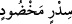

Yâni, onlar dikensiz kiraz ağacındadırlar. Dünya kirazı gibi değil; çünkü dünya kiraz
ağacı dikenli olarak yaratılmıştır. Cennetteki kiraz ağacı dikensizdir. Sanki bu ağacın
dikenleri kesilmiş, ayıklanmış gibidir. Âyet-i kerîmede geçen (sidr mahdud)
tâbiri, düzgün kiraza benzetmede mübâlağa kabilindendir. Veya sebebiyet alâkası ile
mecâz olarak kullanılmıştır. Çünkü, dikensiz anlamındaki (hadad) kelimesi,
dikenlerin kesilip koparılmasına sebeptir. Ayrıca, çok dolu ve yüklü olması sebebiyle
“kiraz dallarının iki kat olması” mânâsına da geldiği söylenmiştir. “Ağacın dallarını
üstüste koydu” anlamındaki (hadade’l-ğusnen) sözünden alınmıştır. Buna göre
âyette, muzaf ileyh hazf edilmiş, muzaf onun yerine geçmiştir. Kiraz anlamındaki “sidr”,
kendisine “nebk” denilen bir meyve ağacıdır. Nebk, araplarca bilinip sevilen bir meyve
olup ağacının yapraklarından çöğen yaparlar.
el-Müfredat adlı eserde şöyle denilmiştir: Sidr, gıdası ve besin değeri az olan bir
ağaçtır. Bazen dikenleri budanarak gölgelik olarak kullanılır. Bu sebeple bu ağaç
cennetin gölgesi ve nimetleri için bir örnek olarak zikredilmiştir. Bazı âlimlerin
belirttiğine göre, cennet meyvelerinin hiçbiri bir kabuk veya kılıf içinde değildir;
dünyadaki baklagillerin ve benzerlerinin kabuk içinde bulundukları gibi. Aksine hiçbir
engel bulunmadan yenecek, içilecek, koklanacak ve gözle görülecek durumdadırlar.
29. Meyveleri salkım salkım dizili muz ağaçları,
Alttan tepeye doğru üst üste yığılmış, gövdede hiç boş yeri kalmayacak şekilde
düzenli yüklenmiş, meyvesi salkım salkım muz ağacı. Bu ağacın büyük yaprakları ve
serin gölgesi bulunur. Kiraz ağacının yaprakları ise ufak olur. Yahut bu ağaç, kokusu çok
güzel, çiçekleri bol ve düzenli olup arapların süs olarak kullandıkları dikenli ve
meyveli bir ağaçtır.
Süddî’den rivayet edildiğine göre, dünya muzuna benzeyen ama meyvesi baldan daha
tatlı bir ağaçtır.
Mücahid’den rivayet edildiğine göre, Tâiflilerin imrenilecek güzellikte muzları ve
kiraz ağaçları bol bir vâdîleri vardı. Onlar, “keşke cennette böyle bir vâdîmiz olsa”
dediler. Bunun üzerine bu âyet-i kerîme indi. Nitekim Allah Teâlâ “Orada canlarının
istediği, gözlerinin hoşlandığı her şey vardır…” (ez-Zuhruf 43/71) buyurarak her
toplumu hoşnud edecek ve onların sevecekleri güzellikleri zikretmiştir. Cennet muz ve
kirazlarının dünya muz ve kirazlarına olan üstünlükleri, cennetteki diğer varlıkların ve
nimetlerin dünya nimetlerinden üstünlükleri gibidir.